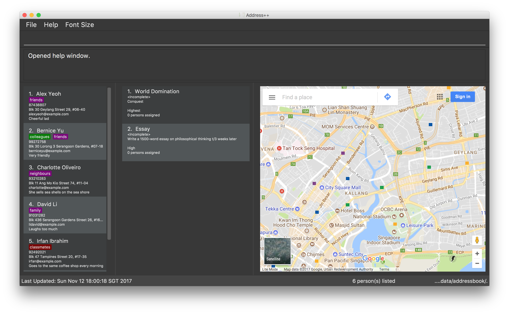

By: Team W09-B2 Since: Aug 2017 Licence: MIT
Address++ is an application that keeps track of your contacts and your daily to-dos for you. It is targeted
at students who work on projects or assignments frequently, but it can also be used for other purposes.
- 1. About
- 2. Getting Started
- 3. Features
- 3.1. Changing Font Sizes
- 3.2. Viewing help :
help - 3.3. Adding a person:
add - 3.4. Adding a task:
add task/(Since V1.2) - 3.5. Adding a tag to persons :
add tag/(Since V1.2) - 3.6. Listing all persons :
list - 3.7. Editing a person :
edit - 3.8. Editing a person :
edit task/(Since V1.2) - 3.9. Renaming existing tags :
edit tag/(Since v1.2) - 3.10. Changing the Privacy of a person’s details :
changeprivacy(Since V1.3) - 3.11. Changing the Privacy Level of the address book :
privacylevel(Since V1.5) - 3.12. Favouriting persons :
favourite(since V1.3) - 3.13. Listing all favourite persons :
showfavourite(since V1.3) - 3.14. Locating persons by name :
find - 3.15. Finding a task :
find task/(Since V1.3) - 3.16. Listing all tags :
showtag(Since V1.5) - 3.17. Locating persons by tag :
find tag/(Since V1.4) - 3.18. Deleting a person :
delete - 3.19. Deleting a task :
delete task/(Since V1.2) - 3.20. Deleting a tag of persons :
delete tag/(Since V1.2) - 3.21. Sorting your contact list and tasks :
sort(Since V1.1) - 3.22. Backing up your data :
backup(Since V1.2) - 3.23. Protecting your data :
lockunlock(Since V1.5) - 3.24. Changing your password :
changepassword(Since V1.5) - 3.25. Selecting a person :
select - 3.26. Selecting a task :
select task/(Since V1.4) - 3.27. Locating a person’s address :
locate(Since V1.4) - 3.28. Navigating from one address to another :
navigate(Since V1.5) - 3.29. Marking tasks as complete :
setcomplete(Since V1.5) - 3.30. Marking tasks as incomplete :
setincomplete(Since V1.5) - 3.31. Assigning contacts to task :
assign(Since V1.4) - 3.32. Dismissing contacts from task :
dismiss(Since V1.4) - 3.33. Viewing contacts assigned to a task :
viewassign(Since V1.5) - 3.34. Changing the Address Book’s theme :
theme(Since V1.5) - 3.35. Listing entered commands :
history - 3.36. Undoing previous command :
undo - 3.37. Unfavouriting persons :
unfavourite(since V1.3) - 3.38. Redoing the previously undone command :
redo - 3.39. Clearing all entries :
clear - 3.40. Opening a save file :
open - 3.41. Saving the data as a new save file :
save - 3.42. Exiting the program :
exit - 3.43. Saving the data
- 4. FAQ
- 5. Command Summary and Cheat Sheet
- 6. Command Shorthand Cheat Sheet
- 7. Keyboard Shortcuts
- 8. v2.0 UI Concept
1. About
After reading this user guide, you should be more familiar with how Address++ can be used to maintain your contacts and tasks.
No technical knowledge is required when running the application, although basic knowledge of installation is required to install the prerequisite libraries for Address++ (Java).
2. Getting Started
-
Ensure you have Java version
1.8.0_60or later installed in your Computer.Having any Java 8 version is not enough.
This app will not work with earlier versions of Java 8. -
Download the latest
addressbook.jarhere. -
Copy the file to the folder you want to use as the home folder for your Address++.
-
Double-click the file to start the app. The GUI should appear in a few seconds.
 -
Type the command in the command box and press Enter to execute it.
e.g. typinghelpand pressing Enter will open the help window. -
Some example commands you can try:
-
help: opens this page in a new window -
list: lists all contacts -
addn/John Doe p/98765432 e/johnd@example.com a/John street, block 123, #01-01 r/This remark is a stub: adds a contact namedJohn Doeto Address++. -
delete3: deletes the 3rd contact shown in the current list -
exit: exits the app
-
-
Refer to the Features section below for details of each command.
3. Features
Command Format
-
Words in
UPPER_CASEare the parameters to be supplied by the user e.g. inadd n/NAME,NAMEis a parameter which can be used asadd n/John Doe. -
Items in square brackets are optional e.g
n/NAME [t/TAG]can be used asn/John Doe t/friendor asn/John Doe. -
Items with
… after them can be used multiple times including zero times e.g.[t/TAG]…can be used ast/friend,t/friend t/familyetc. -
Parameters can be in any order e.g. if the command specifies
n/NAME p/PHONE_NUMBER,p/PHONE_NUMBER n/NAMEis also acceptable.
3.1. Changing Font Sizes
Are the font sizes too small or too big? Address++ allows you to change your font sizes at will. Here are three ways of changing the font sizes:
Option 1: Menu Font Size Buttons and Keyboard Shortcuts

-
Increase Size: CTRL + W (CMD + W on MacOS)
-
Decrease Size: CTRL + E (CMD + E on MacOS)
-
Reset Size: CTRL + R (CMD + R on MacOS)
Option 3: Handtype command into CLI:

-
Increase Size Command:
fontsize increase -
Decrease Size Command:
fs decrease -
Reset Size Command:
fontsize reset -
fontsizecan be replaced withfsfor faster input.
3.2. Viewing help : help
If you have trouble figuring out how to do something, or would like to find out about more features, you can click
on the help menu button. You can also enter the command help to access the help window.
Format: help
Alternatively, you may opt to use the keyboard shortcut F1.
3.3. Adding a person: add
You can use the add command to add new people to your address book.
add can be replaced by a for faster input.
|
Format: add n/NAME [p/PHONE_NUMBER] [e/EMAIL] [a/ADDRESS] [r/REMARK] [v/AVATAR] [t/TAG]…
Example Scenarios:
3.4. Adding a task: add task/ (Since V1.2)
You can use the add task/ command to add new tasks to your address book. This allows you to keep track of your
assignments and project objectives.
Format: add task/ n/NAME [d/DESCRIPTION] [by/DEADLINE] [p/PRIORITY] [a/ADDRESS]
add can be replaced by a for faster input.
|
Examples:
3.5. Adding a tag to persons : add tag/ (Since V1.2)
You can use the add tag/ command to add tag for multiple persons in the address book. For example, you may wish to add the tag friends to the first two persons in the address book.
add tag/ can be replaced by a tag/ for faster input. |
Format: add tag/ INDEX… t/[TAG]
Example Scenarios:
Figure 3.5.1 : AddTagCommand
3.6. Listing all persons : list
Need a quick overview of what needs to be done? You can use the list command to quickly show all your contacts and tasks in the address book.
list can be replaced by l for faster input. |
Format: list
3.7. Editing a person : edit
You can use the edit command to quickly fix mistakes in your entries, or add/remove details in your contacts. You may wish to edit your contacts when they change their phone numbers, for example.
edit can be replaced by e for faster input. |
Format: edit INDEX [n/NAME] [p/PHONE] [e/EMAIL] [a/ADDRESS] [r/REMARK] [v/AVATAR] [t/TAG]…
Examples:
3.8. Editing a person : edit task/ (Since V1.2)
You can use the edit task/ command to quickly fix mistakes in your entries, or add/remove details in your tasks. You may wish to edit your tasks when their requirements change, for example.
edit can be replaced by e for faster input. |
Format: edit task/ INDEX [n/NAME] [d/DESCRIPTION] [by/DEADLINE] [p/PRIORITY] [a/ADDRESS]
3.9. Renaming existing tags : edit tag/ (Since v1.2)
You can use edit tag/ to rename one existing tag. For example, you may wish to promote all existing "acquaintances" into "friends", or change all "CS2103" project mates to "CS2101" project mates instead.
edit tag/ can be replaced by et for faster input. |
Format: edit tag/ OLDTAGNAME NEWTAGNAME
Example Scenarios::
3.10. Changing the Privacy of a person’s details : changeprivacy(Since V1.3)
You can use the changeprivacy command to set the privacy settings for each field of an existing Person in the address book, which allows you to choose specifically what information will be displayed.
changeprivacy can be replaced by cp for faster input. |
Format: changeprivacy INDEX [n/NAME] [p/PHONE] [e/EMAIL] [a/ADDRESS] [r/REMARK] [v/AVATAR]
Example Scenarios::
3.11. Changing the Privacy Level of the address book : privacylevel(Since V1.5)
Changing a person’s privacy just to reveal their data or to make a person fully confidential may be time-consuming. If you would like to view all the data hidden by private fields easily, or completely hide a person with private fields, you can use this command to change the Privacy Level of the address book.
At level 1, all data, regardless of whether they are set to be private or public, can be viewed.
At level 2, private fields will have their data hidden by a string, such as <Private Phone>.
At level 3, any person containing at least one private field will be completely hidden in the address book.
privacylevel can be replaced by pl for faster input. |
Format: privacylevel LEVEL
Example Scenarios::
3.12. Favouriting persons : favourite (since V1.3)
You can use favourite command to make persons in the address book become your favourite contacts. For example, you may wish to set your girlfriend as your favourite contact. You will see a heart png next to your girlfriend’s name
once you successfully set her as your favourite contact.
favourite can be replaced by fav for faster input. |
Format: favourite INDEX [MORE INDEX]
Examples Scenario:

Figure 3.12.1 : FavouriteCommand
3.13. Listing all favourite persons : showfavourite (since V1.3)
You can use the showfavourite command to quickly show all your favourite contacts in the address book.
showfavourite can be replaced by sfav for faster input. |
Format: showfavourite
Figure 3.13.1 : ShowFavouriteCommand
3.14. Locating persons by name : find
You can use the find command to quickly filter out contacts, or tasks who match your criteria. For example, you may wish to find all the tasks marked with the highest priority, or all your contacts who have a certain family name.
find can be replaced by f for faster input.Format: find KEYWORD [MORE_KEYWORDS] |
Examples Scenario:
3.15. Finding a task : find task/ (Since V1.3)
You can use the find task/ command to quickly find tasks that match your criteria, as well as tasks that have a certain level of urgency.
Furthermore, you can choose to only retrieve tasks that are either complete, or still in progress.
find can be replaced by f for faster input. |
Format: find task/ KEYWORD [MORE_KEYWORDS] [p/PRIORITY] [done/STATE]
Examples Scenario:
3.16. Listing all tags : showtag (Since V1.5)
You can use the showtag command to quickly show all tags in the address book. Sometimes you may forget tags that you have added a few weeks ago. You may use this command to help you.
showtag can be replaced by stag for faster input. |
Format: showtag
3.17. Locating persons by tag : find tag/ (Since V1.4)
You can use the find tag/ command to quickly filter out contacts who match your criteria. For example, you may wish to find contacts who are your classmates.
If you want to find contacts who are your classmates but not your friends, you just need to add / in front of the friends.
find tag/ can be replaced by f tag/ for faster input. |
Format: find tag/ KEYWORD [MORE_KEYWORDS]
Example Scenarios:
Figure 3.17.1 : FindTagCommand
3.18. Deleting a person : delete
You can use the delete command to remove contacts from the address book. The delete command will help you clean up contacts who you may not wish to associate with anymore.
delete can be replaced by d for faster input. |
Format: delete INDEX
Example Scenarios:
3.19. Deleting a task : delete task/ (Since V1.2)
You can use the delete task/ command to remove tasks from the address book. The delete task/ command will help you clean up obsolete or completed tasks.
delete task/ can be replaced by d task/ for faster input. |
Format: delete task/ INDEX
Example Scenarios:
3.20. Deleting a tag of persons : delete tag/ (Since V1.2)
You can use delete tag/ to delete the tag of multiple persons from the address book.
delete tag/ can be replaced by d tag/ for faster input. |
Format: delete tag/ INDEX… t/[TAG]
Example Scenarios:

Figure 3.20.1 : DeleteTagCommand
3.21. Sorting your contact list and tasks : sort (Since V1.1)
Sort your contacts or tasks by using the sort command
sort can be replaced with so for faster input. |
Format: sort LIST FIELD ORDER
Example Scenarios:
3.22. Backing up your data : backup (Since V1.2)
You can backup your saved data on Address++ by using the backup command.
Format: backup [FILENAME]
backup can be replaced with bk for faster input.
| This allows you to backup your saved data on Address++ in another file. |
3.23. Protecting your data : lock unlock (Since V1.5)
Worried about security? Address++ allows your to protect your data with a password.
Using the lock and unlock commands, you can toggle between security modes.
Locked address books only allow viewing of data. If anyone attempts to tamper with your data, they will be greeted with this error:
Format for lock Command: lock pw/[PASSWORD]
lock can be replaced with lk for faster input.
Format for unlock Command: unlock pw/[PASSWORD]
unlock can be replaced with ul for faster input.
The default password is password
|
Example Scenarios:
3.24. Changing your password : changepassword (Since V1.5)
Want to choose a better password? The changepassword command allows you to change your
password whenever you want, provided you know the old password.
| The default password is 'password' |

Format: changepassword pw/[PASSWORD] np/[NEWPASSWORD] cfp/[CONFIRMPASSWORD]
changepassword can be replaced with cpw for faster input.
Example Scenarios:
3.25. Selecting a person : select
You can use select to pick out one contact, and look at it in greater detail.
select can be replaced by s for faster input. |
Format: select INDEX
Example Scenarios:
3.26. Selecting a task : select task/ (Since V1.4)
You can use select task/ to pick out a task, and look at it in greater detail.
select can be replaced by s for faster input. |
Format: select task/ INDEX
Example Scenarios:
3.27. Locating a person’s address : locate (Since V1.4)
If you ever need to visit one of your contacts, you can use locate to choose a contact, and search for their address online using Google Maps.
locate can be replaced by loc for faster input. |
Format (person): locate INDEX
Example Scenarios:
3.28. Navigating from one address to another : navigate (Since V1.5)
Although locate shows you where a person’s address is, it does not tell you how to get there. The navigate command will provide directions, with the help of Google Maps, on how to get from one address to another.
navigate can be replaced by nav for faster input. |
Format (person): navigate [fp/INDEX] [ft/INDEX] [fa/ADDRESS] (Must have only one of three) [tp/INDEX] [tt/INDEX] [ta/ADDRESS] (Must have only one of three)
Example Scenarios:
3.29. Marking tasks as complete : setcomplete (Since V1.5)
Have you finally completed a task in the address book? You can use setcomplete to mark the specified task as complete.
setcomplete can be replaced by stc for faster input. |
Format: setcomplete INDEX
Example Scenarios:
3.30. Marking tasks as incomplete : setincomplete (Since V1.5)
Did you accidentally mark a task as completed? You can use setincomplete to mark the specified task as incomplete.
setincomplete can be replaced by sti for faster input. |
Format: setincomplete INDEX
Example Scenarios:
3.31. Assigning contacts to task : assign (Since V1.4)
You can use assign to assign contacts to an ongoing task. You may wish to use assign when collaborating with others for projects, for example.
assign can be replaced by as for faster input. |
Format: assign PEOPLEINDEX… to/TASKINDEX
Example Scenarios:
3.32. Dismissing contacts from task : dismiss (Since V1.4)
You can use dismiss to remove assignment from tasks. You may wish to use dismiss when a contact is no longer in charge of a task, for example.
dismiss can be replaced by ds for faster input. |
Format: dismiss PEOPLEINDEX… from/TASKINDEX
Example Scenarios:
3.33. Viewing contacts assigned to a task : viewassign (Since V1.5)
You can use viewassign to see who is assigned to a particular task. You may wish to use viewassign when you want to contact only the people who are assigned to a particular task, for example.
viewassign can be replaced by va for faster input. |
Format: viewassign INDEX
Example Scenarios:
3.34. Changing the Address Book’s theme : theme (Since V1.5)
Perhaps you may not be too fond of the existing style of the address book and you want to have something fresh. The theme command changes the address book between two themes, light and dark.
theme can be replaced by th for faster input. |
Example Scenarios:
Format: theme + THEME
3.35. Listing entered commands : history
Lists all the commands that you have entered in reverse chronological order.
history can be replaced by h for faster input. |
Format: history
3.36. Undoing previous command : undo
Did you make a mistake somewhere? undo restores the address book to the state before the previous undoable command was executed.
undo can be replaced by u for faster input. |
Format: undo
Example Scenarios:
3.37. Unfavouriting persons : unfavourite (since V1.3)
You can use unfavourite command to set your previous favourite persons become the normal persons. For example,
after you break up with your girlfriend, you may wish to set your girlfriend back to normal person.
unfavourite can be replaced by unfav for faster input. |
Format: unfavourite INDEX [MORE INDEX]
Example Scenarios:
Figure 3.37.1 : UnfavouriteCommand
3.38. Redoing the previously undone command : redo
Perhaps an undo was not necessary. redo reverses the most recent undo command.
redo can be replaced by r for faster input. |
Format: redo
Example Scenarios:
3.39. Clearing all entries : clear
If you would like to start fresh on a clean slate, you can use this command to clear all entries from the address book.
Additionally, if you clear only the contacts list or the task list, you can specify which type to clear in the command.
clear can be replaced by c for faster input. |
Format: clear
To clear only the contacts list, type clear person/
To clear only the tasks list, type clear task/
Example Scenarios:
3.40. Opening a save file : open
Switching between address books is made easy with the open command, as it allows you can load different save files into the application.
You can choose which .xml file to open from the pop up window that appears upon executing this command.
open can be replaced by o for faster input. |
Format open
3.41. Saving the data as a new save file : save
If you would like to save a copy of your data in a separate location or with a different name, the save command will allow you to do just that.
You can choose what to name your save file and where to save it from the pop up window that appears upon executing this command.
save can be replaced by sa for faster input. |
Format: save
3.42. Exiting the program : exit
Once you have finished using Address++, you may use this command to exit the program.
Format: exit
Alternatively, you may opt to use the keyboard shortcut ALT+F4.
3.43. Saving the data
Address book data is saved in the hard disk automatically after any command that changes the data.
There is no need for you to save manually.
If you want to change the location of the save file, you can use the save command, click on File → Save As or use the keyboard shortcut CTRL+S and select the new location and file name for the save file in the pop-up window.
If you want to open a different save file, you can use the open command, click on File → Open or use the keyboard shortcut CTRL+O and select the new save file to use from the pop-up window.
4. FAQ
Q: How do I transfer my data to another Computer?
A: Install the app in the other computer and overwrite the empty data file it creates with the file that contains the data of your previous Address Book folder. The Open command CTRL+O can also be used instead of manually overwriting the file if you wish to keep the original data file or store the new data file in a seperate location.
5. Command Summary and Cheat Sheet
-
Add :
add n/NAME [p/PHONE_NUMBER] [e/EMAIL] [a/ADDRESS] [r/REMARK] [t/TAG]…
e.g.add n/James Ho p/22224444 e/jamesho@example.com a/123, Clementi Rd, 1234665 r/Sleeps at 3am t/friend t/colleague -
Add person with private fields :
add pn/NAME [pp/PHONE_NUMBER] [pe/EMAIL] [pa/ADDRESS] [r/REMARK] [t/TAG]…
e.g.add pn/James Ho pp/22224444 pe/jamesho@example.com pa/123, Clementi Rd, 1234665 r/Sleeps at 3am t/friend t/colleague -
Add task :
add task/ n/NAME [d/DESCRIPTION] [by/DEADLINE] [p/PRIORITY] [a/ADDRESS]
e.g.add task/ n/Update Documentation d/Update documentations for V1.1 for CS2103T t/30/10/17 p/high a/NUS -
Add tag :
add tag/ [INDEX…] t/[TAG]
e.g.add tag/ 1 2 t/friends -
Change a person’s details' privacy :
changeprivacy INDEX [n/TRUE or FALSE] [p/TRUE or FALSE] [e/TRUE or FALSE] [a/TRUE or FALSE] [r/TRUE or FALSE]
e.g.changeprivacy 2 n/true p/false e/true a/false r/true -
Changing the privacy level of the address book:
privacylevel [LEVEL] -
Clear all data :
clear -
Clear persons :
clear person/ -
Clear tasks :
clear task/ -
Delete person :
delete INDEX
e.g.delete 3 -
Delete task :
delete task/ INDEX
e.g.delete task/ 4 -
Delete tag :
delete tag/ [INDEX…] t/[TAG]
e.g.delete tag/ 1 2 t/friends -
Edit :
edit INDEX [n/NAME] [p/PHONE_NUMBER] [e/EMAIL] [a/ADDRESS] [r/REMARK] [v/AVATAR] [t/TAG]…
e.g.edit 2 n/James Lee e/jameslee@example.com -
Edit task :
edit task/ INDEX [n/NAME] [d/DESCRIPTION] [t/DEADLINE] [p/PRIORITY] [a/ADDRESS]
e.g.edit task/ 2 p/veryhigh -
Edit tag :
edit tag/ TAGTOCHANGE NEWTAGNAME
e.g.edit tag/ friends enemies -
Favourite persons :`favourite INDEX`
e.g.favourite 1 -
Unfavourite persons :`unfavourite INDEX`
e.g.unfavourite 1 -
Show favourite list :`showfavourite`
e.g.showfavourite -
Find person :
find KEYWORD [MORE_KEYWORDS]
e.g.find James Jake -
Find tag :
find tag/ TAG [MORE_TAGS]
e.g.find tag/ friends -
Find task :
find task/ KEYWORD [MORE_KEYWORDS] [p/PRIORITY] [done/STATE]
e.g.find task/ update p/high done/false -
Help :
help -
List persons and tasks :
list -
List tags :
showtag -
Locate a person’s address :
locate INDEX -
Navigating from one address to another :
`navigate [fp/INDEX] [ft/INDEX] [fa/ADDRESS] (Must have only one of three) [tp/INDEX] [tt/INDEX] [ta/ADDRESS] (Must have only one of three)
e.g. navigate fa/Tampines Mall ta/Sentosa -
Select person :
select INDEX
e.g.select 2 -
Select task :
select task/ INDEX
e.g.select task/ 2 -
Set task as complete :
setcomplete INDEX
e.g.setcomplete 4 -
Set task as incomplete :
setincomplete INDEX
e.g.setincomplete 5 -
Assign to task :
assign PERSONINDEX… to/TASKINDEX
e.g.assign 4 1 17 18 to/21 -
Dismiss from task :
dismiss PERSONINDEX… from/TASKINDEX
e.g.dismiss 4 1 from/17 -
View contacts assigned to a task :
viewassign INDEX
e.g.viewassign 1 -
Theme :
theme THEME
e.g.theme light -
History :
history -
Undo :
undo -
Redo :
redo -
Open :
open -
Save As :
save -
Exit :
exit
6. Command Shorthand Cheat Sheet
-
Add :
a n/NAME [p/PHONE_NUMBER] [e/EMAIL] [a/ADDRESS] [r/REMARK] [t/TAG]…
e.g.a n/James Ho p/22224444 e/jamesho@example.com a/123, Clementi Rd, 1234665 r/Sleeps at 3am t/friend t/colleague -
Add person with private fields :
a pn/NAME [pp/PHONE_NUMBER] [pe/EMAIL] [pa/ADDRESS] [r/REMARK] [t/TAG]…
e.g.a pn/James Ho pp/22224444 pe/jamesho@example.com pa/123, Clementi Rd, 1234665 r/Sleeps at 3am t/friend t/colleague -
Add task :
a task/ n/NAME [d/DESCRIPTION] [by/DEADLINE] [p/PRIORITY] [a/ADDRESS]
e.g.a task/ n/Update Documentation d/Update documentations for V1.1 for CS2103T t/30/10/17 p/high a/NUS -
Add tag :
a tag/ [INDEX…] t/[TAG]
e.g.a tag/ 1 2 t/friends -
Change a person’s details' privacy :
cp INDEX [n/TRUE or FALSE] [p/TRUE or FALSE] [e/TRUE or FALSE] [a/TRUE or FALSE] [r/TRUE or FALSE]
e.g.cp 2 n/true p/false e/true a/false r/true -
Changing the privacy level of the address book:
pl [LEVEL] -
Clear all data :
clear -
Clear persons :
c person -
Clear tasks :
c task -
Delete person :
d INDEX
e.g.d 3 -
Delete task :
d task/ INDEX
e.g.d task/ 4 -
Delete tag :
d tag/ INDEX t/[TAG]
e.g.d tag/ 1 2 t/friends -
Edit :
e INDEX [n/NAME] [p/PHONE_NUMBER] [e/EMAIL] [a/ADDRESS] [r/REMARK] [t/TAG]…
e.g.e 2 n/James Lee e/jameslee@example.com -
Edit task :
e task INDEX [n/NAME] [d/DESCRIPTION] [t/DEADLINE] [p/PRIORITY] [a/ADDRESS]
e.g.e task/ 2 p/veryhigh -
Edit tag :
e tag/ OLDTAGNAME NEWTAGNAME
e.g.e tag/ friends enemies -
Favourite persons :`fav INDEX`
e.g.fav 1 -
Unfavourite persons :`unfav INDEX`
e.g.unfav 1 -
Show favourite list :`sfav`
e.g.sfav -
Find person :
f KEYWORD [MORE_KEYWORDS]
e.g.f James Jake -
Find tag :
f tag/ Tag [MORE_TAGS]
e.g.f tag/ friends -
Find task :
f task/ KEYWORD [MORE_KEYWORDS] [p/PRIORITY]
e.g.f task/ update p/high -
List persons and tasks :
l -
List tags :
stag -
Locate a person’s address :
loc INDEX -
Navigating from one address to another :
`navi [fp/INDEX] [ft/INDEX] [fa/ADDRESS] (Must have only one of three) [tp/INDEX] [tt/INDEX] [ta/ADDRESS] (Must have only one of three)
e.g. navi fa/Tampines Mall ta/Sentosa -
Select person :
s INDEX
e.g.s 2 -
Select task :
s task/ INDEX
e.g.s task/ 2 -
Set task as complete :
stc INDEX
e.g.stc 4 -
Set task as incomplete :
sti INDEX
e.g.sti 5 -
Assign to task :
as PERSONINDEX… to/TASKINDEX
e.g.as 4 1 17 18 to/21 -
Dismiss from task :
ds PERSONINDEX… from/TASKINDEX
e.g.ds 4 1 from/17 -
View contacts assigned to a task :
va INDEX
e.g.va 1 -
Theme :
th THEME
e.g.th light -
History :
h -
Undo :
u -
Redo :
r -
Open :
o -
Save As :
sa
7. Keyboard Shortcuts
-
Exit : ALT+F4
-
Help : F1
-
Open : CTRL+O
-
Save As : CTRL+S
-
Increase Size: CTRL + W (CMD + W on MacOS)
-
Decrease Size: CTRL + E (CMD + E on MacOS)
-
Reset Size: CTRL + R (CMD + R on MacOS)
8. v2.0 UI Concept
This is the concept design of our v2.0 end product. Actual design may vary.